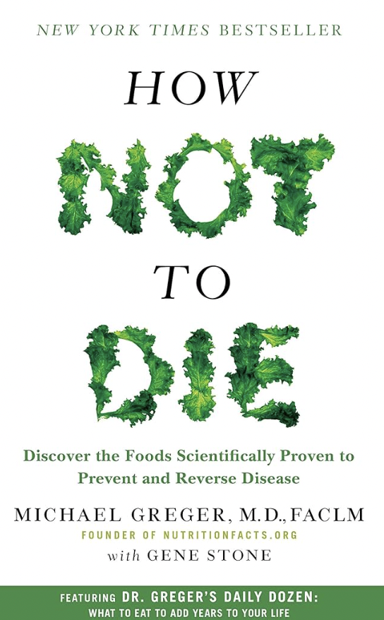
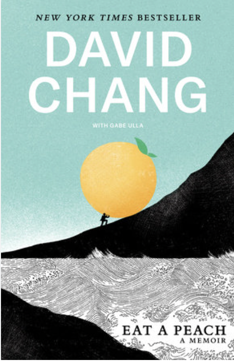
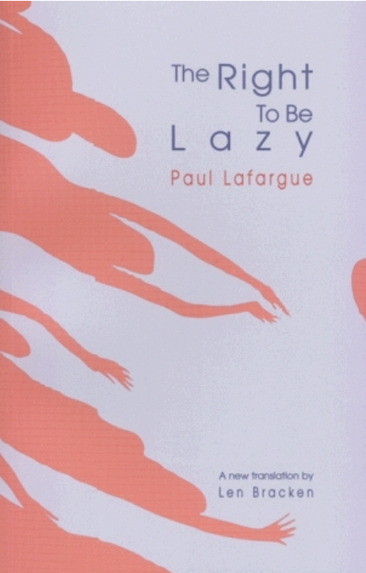

I went to Montreal last year, I walked around, bought a few books, looked at museums, ate at a few restaurants and went on a ten mile hike. What stood out to me was how similar it was to my hometown. There were alot of cool, artsy people everywhere and great matcha.
My favorite restaurant is Cecconi's Dumbo. Cecconi's Dumbo is my favorite location because it's located on the water, under the Brooklyn Bridge and if you ask to be seated outdoors it's a really awesome view of the Manhattan Skyline. I usually order the pesto pasta because it's made fresh to order. The Cecconi's location in West Hollywood, although not as nice as the Dumbo location, has amazing truffle fries on their weekday happy hour menu. My favorite memory at the Cecconi's Dumbo location was going with a friend of mine. I looked / watched the sunset together while sharing pizza and a pasta plate. It was one of the most peaceful evenings I've experienced.
| Title | Cover | Author | Summary |
|---|---|---|---|
| How Not to Die: Discover the Foods Scientifically Proven to Prevent and Reverse Disease |  |
Michael Greger | This book examines diet related studies and their effects on longevity and disease prevention. It spans topics from the effect of meat quality on blood pressure to the benefits of eating spinach. |
| Plato's Symposium | Plato | Plato's symposium is a transcription of a philosophical dialogue. It covers a bunch of theories about what it means to love and exist fully. | |
| How to Eat a Peach |  |
David Chang | This is a personal memoir / autobiography written by chef David Chang about his experience developing Momofuku in New York. It covers topics about personal accountability and restaurant industry culture as well. |
| The Right to be Lazy |  |
Paul Lafargue | It's an absurdist pamphlet. He argues that the right to work is a delusion that enslaves humanity. |